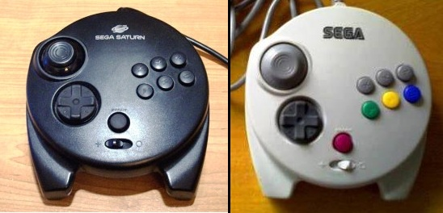
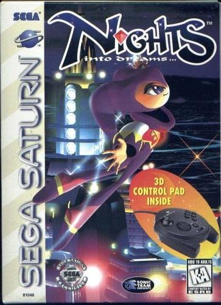
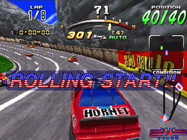
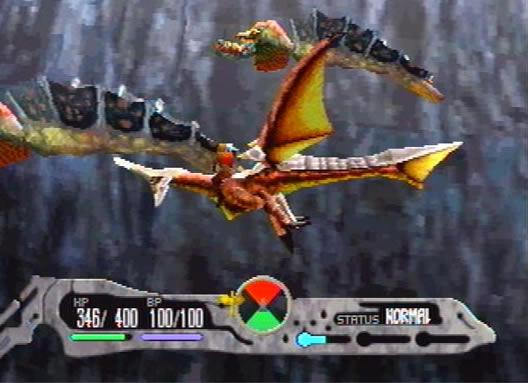
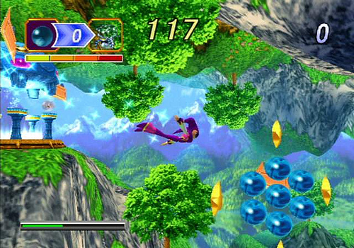
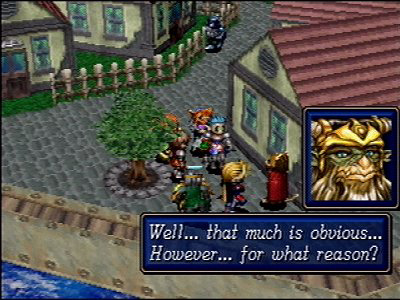

Saturn - Controle 3D

É incrivel como alguns acessórios de video games se
tornam tão pouco conhecidos ao mesmo tempo em que são
maravilhindos. Esse é o caso do (agora) famoso controle 3D do Saturn, tão desprezado em seus dias.
Na geração anterior de video games, o controle não precisava muito mais que um direcional e uma penca de botões. Esse conceito foi levado até a geração 32 bits. Tudo ia muito bem, e mesmo em jogos tridimensionais os controles do jeito antigo serviam perfeitamente, até que a Nintendo, como que iluminada por alguma entidade superior (Shigeru Miamoto talvez) disse ao mundo: SEUS BESTAS! e lançou o Nintendo 64 com um joystick no minimo curioso, e com uma alavanquinha no meio que revolucionou o modo de jogar video games.
Não demorou muito e tanto a Sega quanto a Sony anunciaram novos joysticks para seus consoles, porém foi a Sega que chegou primeiro com o controle 3D do Saturn.

O controle 3D do Saturn. O pretinho é americano, o branco japa .
.
Logo de cara, o formato grandão e arredondado pode causar estranhesa, mas ele é bastante funcional e se apoia bem nas mãos. Os botões L e R foram substituidos por alavancas com sensor de profundidade e precisão. Pense nisso como um acelerador de carro, ao pressionar um pouquinho o carro acelera apenas um pouquinho, ao pressionar bastante o carro dispara. Funciona da mesma forma, e é ideal para utilização em jogos de corrida ou que exijam esse tipo de precisão.
Além do direcional comum, há o direcional analogico para uso em jogos 3D, e que fica localizado bem onde o dedão esquerdo se apoia, o que traz bastante conforto durante o jogo.
No meio do joystick há uma chave seletora. Ela serve para acionar ou desativar as funções 3D do controle. Isso se faz nescessário pois obviamente alguns dos jogos lançados antes do aparecimento desse controle apresentam incompatibilidade com as novas funções dele.
Uma curiosidade desse controle é o proprio cabo, que é removivel. Ha rumores de que a Sega iria utilizar esse controle com outros dispositivos como por exemplo um voltante. Mais tarde surgiu a ideia de acoplar ali alguma coisa que fizesse o controle vibrar (da mesma forma como o Tremor Pack faz no controle do N64), mas no final das contas, nada foi utilizado nessa parte do controle, afinal, o trágico destino do Saturn estava bem evidente...
Durante a vida do Saturn, esse joystick era disponibilizado para venda em avulso, porém lá nos Estados Juntinhos ele vinha de "brinde" junto com o jogo Nights. No Brasil, a Tec Toy chegou a vender uma certa quantidade desse controle, porém muito pouco.

Caixa do Nights onde vinha o controle 3D.
Durante a jogatina, ele apresenta respostas fluidas e suaves, com precisão de comandos e um ótimo ganho na jogabilidade em geral. Jogar games como Daytona CCE, Sega Raly Championship, Panzer Dragoon 2 e Saga, Nights... é simplesmente outra coisa usando esse controle, os games ficam perfeitos!

 
Alguns dos jogos compatíveis com o controle 3D. Todos recebem uma melhora imensa na jogabilidade.
O único problema que ele pode apresentar é no direcional em cruz dele. As peças desse direcional são as mesmas do controle de 6 botões do Mega e do segundo modelo do controle do Saturn. Ele costuma quebrrar na parte mais utilizada (por exemplo, o lado direito) e fica um pouco afundado, mas funciona mesmo assim.
Mais
tarde esse mesmo controle serviu de
inspiração para o joystick do Dreamcast, que herdou
muitas
caracteristicas tanto desse controle quanto do proprio Saturn. Hoje em
dia é complicado achar um desses por um preço no minimo
justo, mas tambem não é um item considerado raro
(é apenas caro mesmo ).
).


Aqui, vou apresentar a restauração de um controle que comprei em péssimo estado numa feirinha da minha cidade, e que agora está lindinho funcionando perfeitamente. Confira as dicas, e faça uma restauração você também!!!
Mega Drive - Telebradesco
Que tal acessar a sua conta do banco, com todo o conforto e comodidade de sua casa? Para isso, o pai de familia iria precisar do Telebradesco, um cartucho especial fabricado com exclusividade pela Tec Toy para o Bradesco; e tambem iria precisar pegar emprestado o Mega Drive do muleque para acessar...